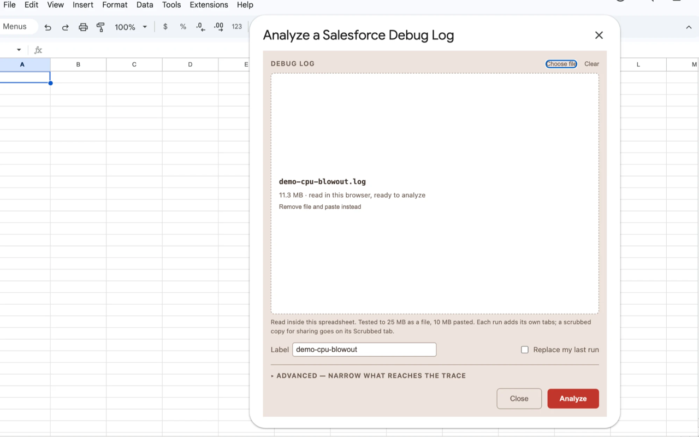
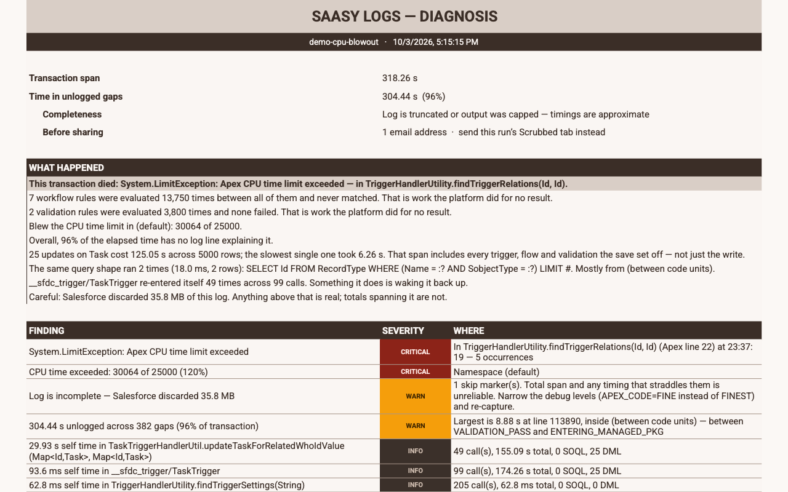
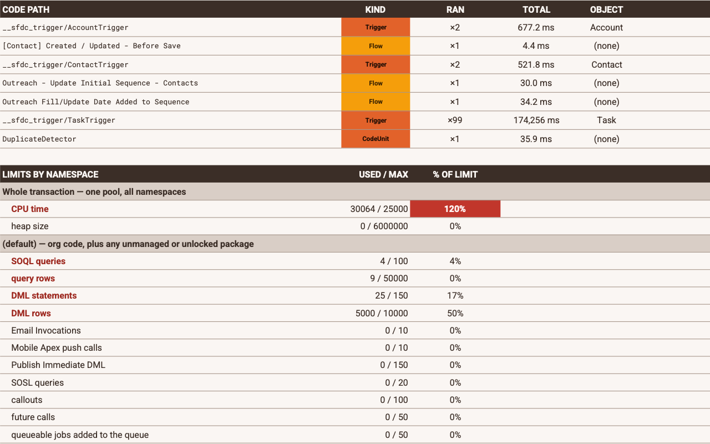
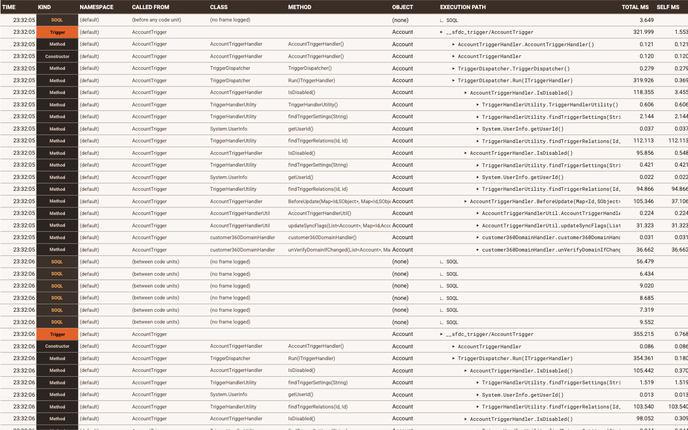
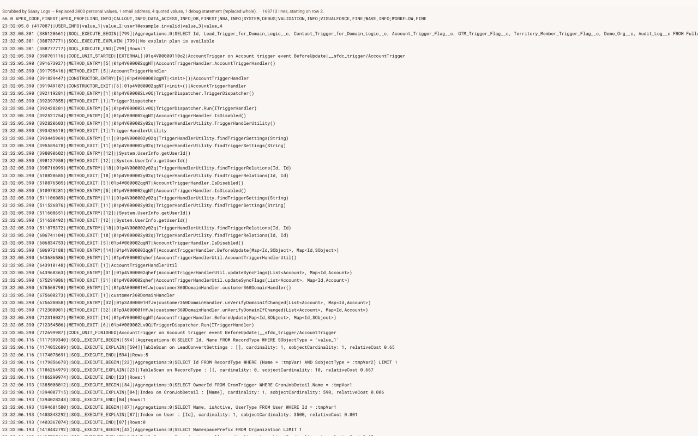

See it on a real log
One real Salesforce debug log: 168,714 lines from a bulk update of Tasks that died. This is what Saasy Logs made of it, in the order you would see it.
1 Upload the log
Open a Google Sheet, start Saasy Logs from the Extensions menu, and
choose the .log file you downloaded from Salesforce. Or paste
it. It is read inside that spreadsheet.

2 It says what happened first
Before any table, a sentence: this transaction died on the Apex CPU time
limit, in TriggerHandlerUtility.findTriggerRelations. Under
it, the things worth knowing: seven workflow rules were evaluated 13,750
times and never matched, and 96% of the elapsed time has no log line
explaining it.
It also says when the log itself is incomplete. Salesforce discarded 35.8 MB of this one, so any total that spans the gap is marked as unreliable rather than reported as fact.

3 Then the path it took
Seven steps instead of 168,714 lines. The one that matters is
TaskTrigger: it ran 99 times, re-entering itself, for
174,256 ms. That is the cause, and it is the thing nobody spots by
scrolling.
Below it, CPU time sits at 120% of its limit, in red. Limits are grouped by namespace, so a managed package's usage is never mixed into yours.

4 Every step, when you need it
The Trace tab lists every trigger, method, flow and query in the order it ran, with the class that called it and the object it ran on. It is an ordinary sheet: filter by kind, class or object to follow one thread through the whole transaction.

5 And a copy you can send
Every run also writes a scrubbed copy of the log on its own tab. Emails, contact and account names, and the values the code printed are replaced. Class, flow and profile names stay, so whoever you send it to can still read it.

What your own logs can show
- A trigger re-entering itself, and how many times.
- Workflow and validation rules that ran without ever matching.
- Time no log line explains, and where the biggest gap sits.
- Which limit was blown, namespace by namespace.
- The methods that cost the most, by their own time and in total.
- The same query shape running more than once.
- When the log itself is incomplete, and what that does to the numbers.